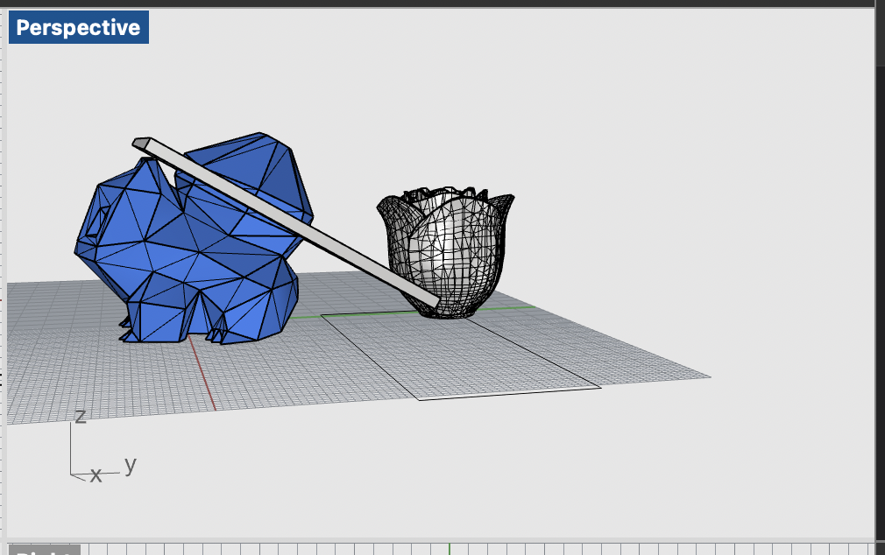

I was excited to get started working on meshes, and my first idea was to combine apples and orange together. I downloaded an apple and orange stls from Thingiverse and opened in Rhino! Luckily, they were both closed meshes. So, I sized them and boolean unioned them together to create this apple/orange hybrid thing.
However, this would take too long to print. I'd likely have to go back and reduce the mesh if I actually were to print this.
However, that didn't seem like enough fun. Jessica Douma and I then met to work on meshes together. She had the great idea of modifying the bulbasaur! So, we went off to modify our bulbasaurs. I decided to modify my bulbasaur by adding a rose. Both STLs were also downloaded from Thingiverse and started off as closed meshes.

I needed to scale my rose that it would fit on my bublasaur. I also decided to begin reducing the mesh in case I wanted to print in a reasonable amount of time with less detail. Upon doing some reductions and quadremesh, the mesh became open :(! I undid my operations and decided not to quadremesh and just reduce mesh to ensure it stayed a closed mesh. I cut the existing plant off my bulbasaur and combined the meshes.
Jessica and I then began discussing our lamp plans. I wanted to go with a pretty simple approach and build some sort of ring/paraboloid/cone around my lamp innerds. The hole would have to be thick enough to go around the plug, but not too big that it would fall off the innerd. I took measurements of my lamp innerds.
I then began sketching my idea, which involved a spiral like effect by stacking multiple rings that hexagon like shapes would slot fit into. Following that hexagon theme from my earlier assignments ;)
I would rotate each ring when placing on the lamp so that it covers more of the bulb and determined I have room for about 6 rings on the lamp innerd. If this is not enough coverage, I can add more slots to the rings. It will be easier to add more slots to the rings since I built it in Grasshopper!
I was running a bit behind this week, so I am still finishing my test prints of the rings as we speak and the hexagon models. I likely will test print/cut the hexagons. However, I am planning to laser cut my hexagons since they are a flat design and it will be much quicker to cut rather than print. If there are issues, I will fall back to doing many hours of prints :).
Cleo is dissappointed in my lamp progress :')
 Acknowledgements:
Peer teachers: Jessica Douma for helping with meshes and lamp ideas!
Moral support: Jessica
Teaching support: TA Junchao
Again the link to all documents if not wanting to scroll up :P [Includes Rhino and STL] :
Emily's 533 Github Assignment 4 Files
Acknowledgements:
Peer teachers: Jessica Douma for helping with meshes and lamp ideas!
Moral support: Jessica
Teaching support: TA Junchao
Again the link to all documents if not wanting to scroll up :P [Includes Rhino and STL] :
Emily's 533 Github Assignment 4 Files